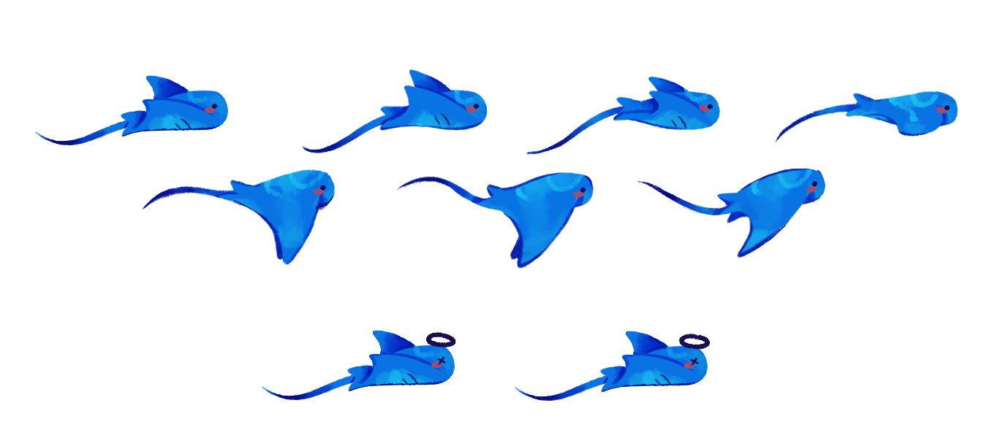
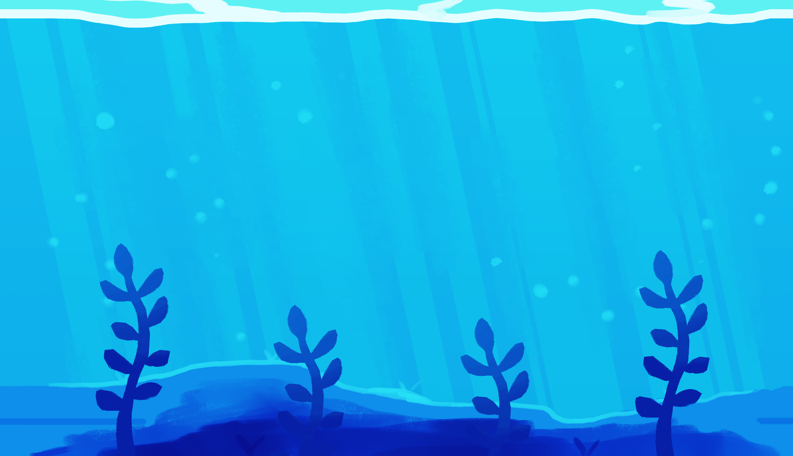

✦
Mantita es un juego de supervivencia como Flappy bird. en esta ocasión encarnas a una manta gigante que surca las aguas marinas, esquivando obstáculos en su camino.
✦
Una manta gigante azul que le gusta viajar por el mar
Animación de Mantita nadando construida con 7 frames
Mar azul donde Mantita trata de esquivar las algas
